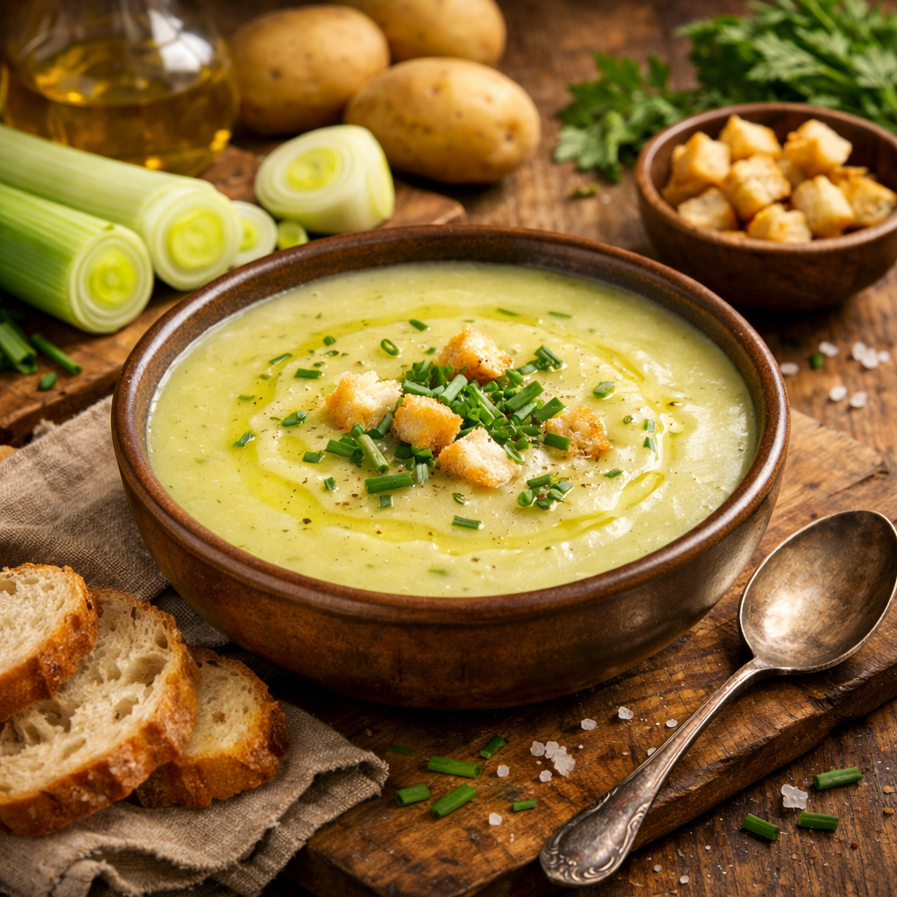

Une soupe simple, réconfortante et authentique préparée avec des légumes du quotidien. Parfaite pour réchauffer les soirées fraîches et accompagner un repas familial.

1. Laver soigneusement les poireaux et les couper en fines rondelles. 2. Éplucher les pommes de terre et les couper en cubes de 2 cm. 3. Éplucher et hacher finement l’oignon. 4. Chauffer l’huile d’olive dans une grande casserole. 5. Faire revenir l’oignon 3 à 4 minutes jusqu’à ce qu’il devienne translucide. 6. Ajouter les poireaux et cuire 5 minutes en remuant. 7. Incorporer les pommes de terre. 8. Ajouter le cube de bouillon puis verser l’eau. 9. Porter à ébullition, puis baisser le feu. 10. Laisser mijoter 25 minutes. 11. Mixer jusqu’à obtention d’une texture lisse. 12. Saler, poivrer et servir bien chaud. ============================== INFORMATIONS & CONSEILS ============================== Simple et réconfortante, la soupe de poireaux est un grand classique de la cuisine belge. Préparée avec des légumes accessibles toute l’année, elle apporte une touche familiale et authentique à votre table. Pour une texture encore plus onctueuse, vous pouvez ajouter une cuillère de crème fraîche au moment du service. Elle se déguste seule ou accompagnée de pain croustillant. Cette soupe se conserve très bien au réfrigérateur pendant 2 à 3 jours et peut être réchauffée facilement.